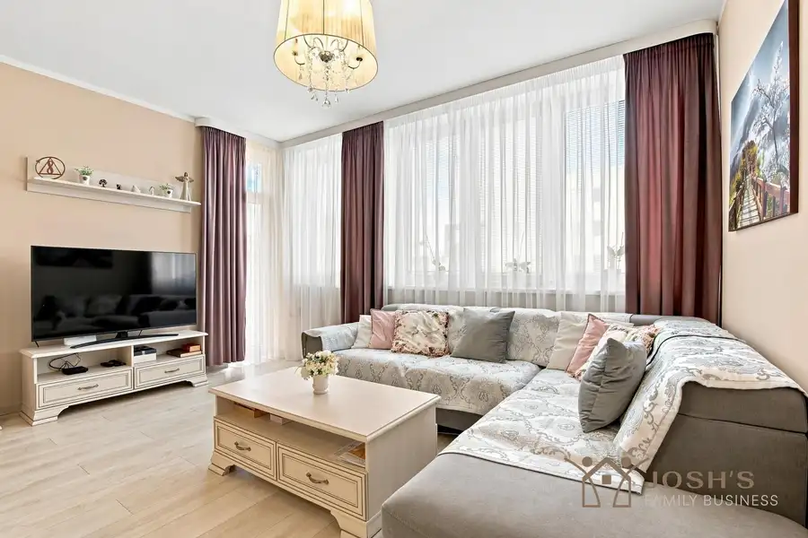
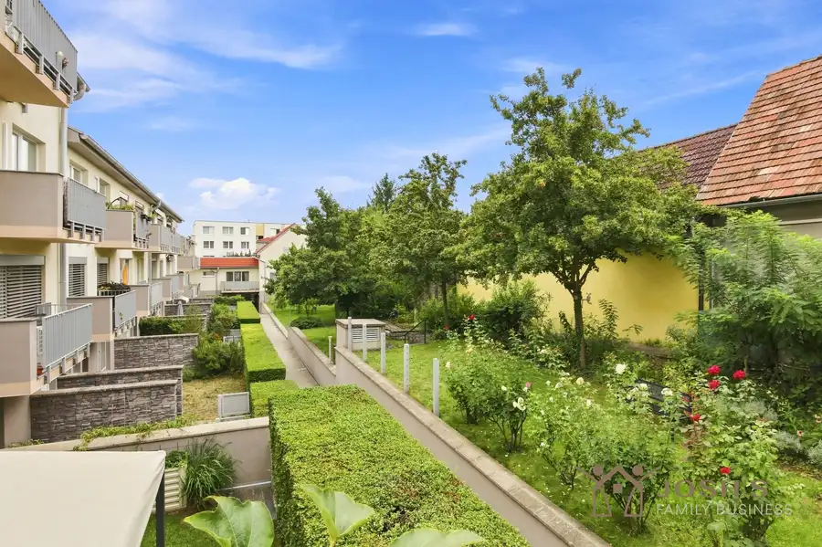

Na predaj novinka v malom raji
Slovenský Grob
- Plocha84 m²
- StavNovostavba
O nehnuteľnosti
Ponúkame na predaj priestranný 4-izbový byt v dvojdome, v obľúbenej lokalite Malý Raj – Slovenský Grob.Nehnuteľnosť spája výhody bytu s komfortom rodinného domu. Má vlastný vstup, prednú okrasnú záhradku, súkromnú zadnú terasu, samostatnú garáž a parkovanie až pre 3 autá.Veľkou výhodou je tiež vlastný plynový kotol s podlahovým kúrením, vďaka čomu má majiteľ vykurovanie vo vlastných rukách a bývanie má nízke mesačné náklady.ZÁKLADNÉ INFORMÁCIE– 4-izbový byt s výmerou 84 m2 (3 spálne)– vlastný vstup– vlastný plynový kotol– podlahové kúrenie– nízke mesačné náklady– samostatná garáž s bránou na diaľkové ovládanie– 3 parkovacie miesta pred nehnuteľnosťou– predná okrasná záhradka– zadná terasa so súkromím– výstup na terasu a do zahrady 2x z obývačky a 1x spálňa– kúpeľňa spojená s wc a druhé wc samostatné, ktoré je spojené s technickou miestnosťou– lokalita Malý Raj – Slovenský GrobDISPOZIČNÉ RIEŠENIEDom ponúka praktickú dispozíciu vhodnú pre rodinu.Dennú časť tvorí priestranná a svetlá obývacia izba s dostatkom miesta pre veľkú sedaciu súpravu a priamym vstupom do exteriéru. Kuchyňa je samostatne riešená a vybavená modernou kuchynskou linkou so vstavanými spotrebičmi.K dispozícii sú tri samostatné izby, ktoré možno využiť ako spálňu, detské izby, pracovňu alebo hosťovskú izbu.Súčasťou je kúpeľňa s toaletou a navyše ešte jedna samostatná toaleta.HLAVNÉ BENEFITY NEHNUTEĽNOSTI– iba prízemie – bez schodov– vlastný vstup– záhradka spredu a súkromná terasa zo zadnej strany– dostatok priestoru pre rodinu– vlastné kúrenie– podlahové vykurovanie– nízke mesačné náklady– garáž s elektrickou bránou na diaľkové ovládanie– 3 parkovacie miesta– pekný, slnečný a svetlý interiér– množstvo úložného priestoru– predpríprava na krb alebo kachle – predpríprava alarm + kamery– predpríprava na vonkajšie žalúzie– príjemná a pokojná rezidenčná lokalitaEXTERIÉRJednou z najväčších výhod tejto nehnuteľnosti je vlastný vonkajší priestor.Pred vstupom sa nachádza upravená okrasná záhradka so zeleňou a vzrastlými stromami, ktorá vytvára veľmi príjemný prvý dojem.Zo zadnej strany bytu je terasa, ktorú možno využiť na posedenie, grilovanie alebo oddych s rodinou a priateľmi.GARÁŽ A PARKOVANIEK nehnuteľnosti patrí samostatná garáž s bránou ovládanou diaľkovým ovládačom.Ďalším výrazným benefitom sú 3 parkovacie miesta pred nehnuteľnosťou, takže parkovanie je bezproblémové aj pre domácnosť s viacerými autami alebo návštevu.VYKUROVANIE A NÁKLADYByt má vlastný plynový kotol a podlahové kúrenie. Majiteľ si tak reguluje vykurovanie podľa vlastných potrieb a nie je odkázaný na centrálne vykurovanie.Výhodou sú zároveň nízke mesačné náklady na bývanie.LOKALITA – MALÝ RAJMalý Raj patrí medzi obľúbené rezidenčné lokality Slovenského Grobu. Ponúka pokojnejšie bývanie v blízkosti Bratislavy a zároveň dobrú dostupnosť do okolitých miest.Nehnuteľnosť môže byť zaujímavou alternatívou najmä pre rodinu, ktorá hľadá viac priestoru, vlastný exteriér, garáž a bezproblémové parkovanie, ale nechce klasický rodinný dom s veľkým pozemkom a starostlivosťou, ktorá s ním súvisí.CENACena nehnuteľnosti je INFO V RKV cene sú zahrnuté všetky poplatky spojené s predajom nehnuteľnosti.Kompletný právny servis a vypracovanie všetkej zmluvnej dokumentácie zabezpečuje zazmluvnená advokátska kancelária.Bezplatné konzultácie ohľadom hypotéky ešte pred podpisom rezervačnej zmluvy a celý proces vybavovania úveru v spolupráci s naším interným hypotekárnym poradcom.Vyriešime za Vás kataster vrátane správnych poplatkov súvisiacich s prevodom nehnuteľnosti.Prevedieme Vás celým procesom predaja rýchlo a bezpečne.Texty, fotografie a marketingové materiály sú autorským dielom a majetkom Josh’s Family Business.Ak Vás naša ponuka zaujala a chceli by ste si nehnuteľnosť pozrieť osobne alebo získať podrobnejšie informácie, neváhajte nás kontaktovať.Kontakt na makléra: Jozef Kotek www.JFB.sk kotek@jfb.sk +421 902 373 422
Parametre
| Druh | Rodinný dom |
|---|---|
| Dátum zverejnenia | 28. 9. 2026 |
| Energetický certifikát budovy | V príprave |
| Plocha pozemku | 203 m² |
| Počet garáží | 1 |
| Počet nadzemných podlaží | 1 |
| Počet vonkajších parkovacích miest | 3 |
| Rok kolaudácie | 2020 |
| Rok výstavby | 2020 |
| Stav nehnuteľnosti | Novostavba |
| Terén pozemku | Rovinatý |
| Typ | Predaj |
| Typ konštrukcie | Tehlová |
| Vybavenie | Garáž, Vonkajšie parkovacie miesto |
| Zastavaná plocha | 84 m² |
| Úžitková plocha | 84 m² |
Kde to je


Mohlo by Vás zaujímať

BytNové10 212 000 €Dokonalý 2-izbový byt Miloslavov 2-izbový57.49 m²1. podlažie Ponúkame na predaj byt, ktorý je kompletne domyslený do posledného detialu majiteľkou.Posunuté priečky ešte vo fáze výstavby, aby byt pôsobil vzdušný…
BytNové10 350 000 €Jedinečná ponuka bývať u Pálffyho Rača, Bratislava 3-izbový67 m²2. podlažie Jedinečná a jediná PONUKA bývať v "starej Rači".Byt je priestranný, svetlý a kompletne zariadený 3-izbový byt vo vyhľadávanej časti… PozemokNové10
Cena dohodouEXKLUZÍVNE NA PREDAJ – Investičné stavebné pozemky vo Vrábľoch, pri Nitre
Nitra
650000 m²
Ponúkam na predaj výnimočný developerský celok v meste Vráble, ktoré sa nachádza len 20 minút od Nitry. Lokalita sa dynamicky rozvíja a má vysoký…
PozemokNové10
Cena dohodouEXKLUZÍVNE NA PREDAJ – Investičné stavebné pozemky vo Vrábľoch, pri Nitre
Nitra
650000 m²
Ponúkam na predaj výnimočný developerský celok v meste Vráble, ktoré sa nachádza len 20 minút od Nitry. Lokalita sa dynamicky rozvíja a má vysoký…